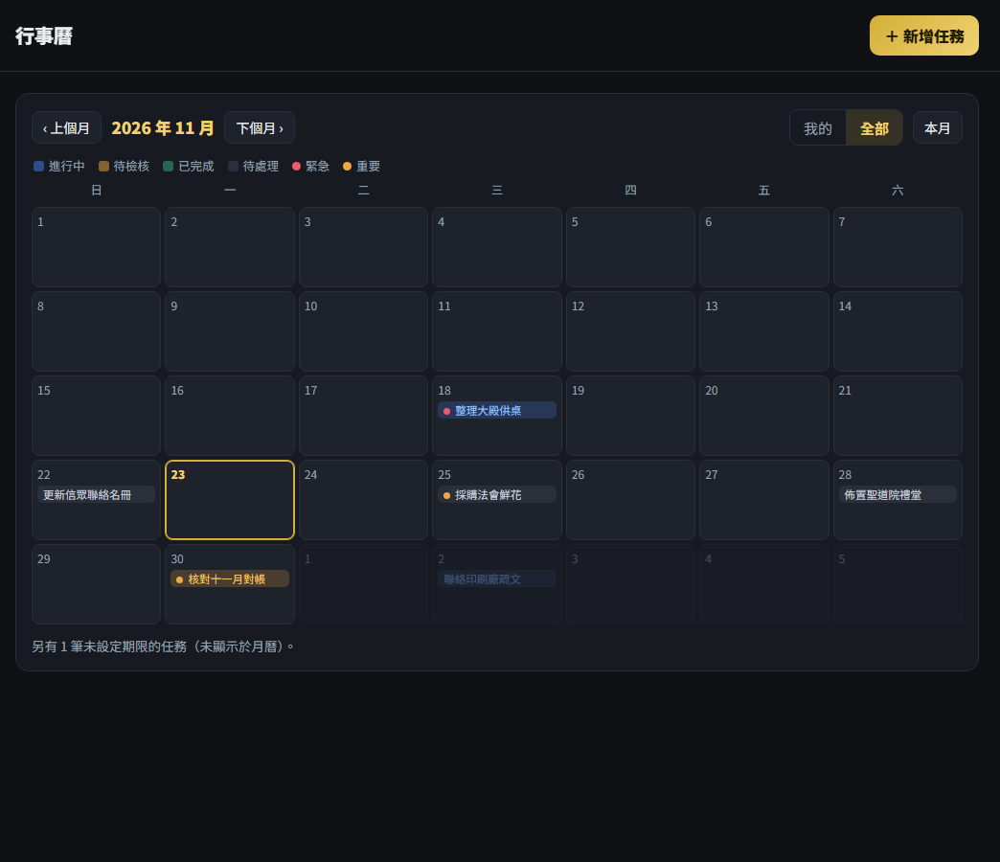
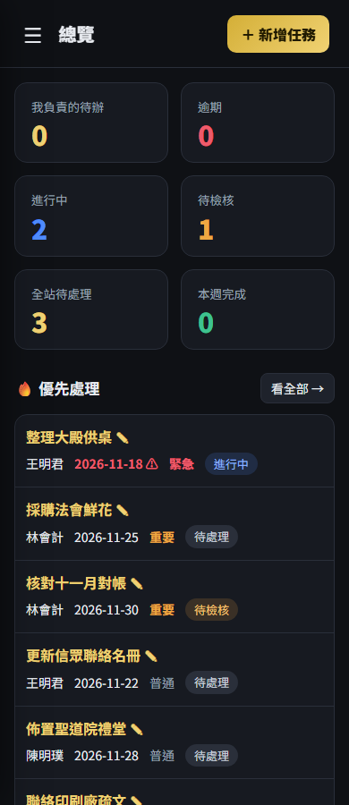

用 AI 做出你自己的工作系統
Notion ＋ Claude 實作課｜2 小時，做完帶走一個能用的成果
適合誰
想把重複的工作交給 AI 處理，卻不知道從哪開始的人，例如長照、行政、小型團隊或個人工作者。不需要會寫程式。
你會帶走什麼
一個你自己工作會用到的 Notion 頁面或模板，加上一套之後能自己重複使用的 Claude 做法。換一個題目，也能照樣做出來。
課程內容（2 小時）
- 0:00–0:15找出最卡的一件事先聊你的實際工作，一起決定這堂課要解決哪一個。
- 0:15–0:45示範Notion 怎麼建資料結構，Claude 怎麼幫你整理、寫文件、規劃流程。
- 0:45–1:30你自己動手做我在旁邊帶，卡住時再協助，由你操作。
- 1:30–1:50整理成模板把成果存成可重複使用的版本。
- 1:50–2:00答疑與下一步回答問題，說明之後可以怎麼延伸。
為什麼可以跟我學
我自己用 Notion、Claude 和 Codex 做了一套能實際運作的派工系統，從規格、實作、測試到上線都走過一遍。課程教的是我實際用過的做法，不是只介紹功能。
課程範例：我做出來的派工系統
這是一套給多人團隊用的待辦／派工看板。主管把「誰、做什麼、什麼時候、在哪、用什麼」派下去，同仁打開就看到自己的工作，做完按一下回報，主管看得到整體進度。原本是靠群組訊息和口頭交代，常常漏掉、也不知道做到哪。
它解決什麼問題
- 事情交代了，但沒人記得誰要做、什麼時候要完成
- 主管要一個個問進度，同仁也不知道自己有哪些事
- 臨時要改派、一次改很多筆，只能手動一筆一筆來
主要功能
總覽一進來就看到逾期、進行中、待處理、本週完成的數量，和要優先處理的清單。
派工與任務總表新增任務、一次指派給多人，可依院別、狀態、負責人篩選。
我的工作只看自己被指派的事，一鍵「開始做」「完成」。
狀態流轉待處理、進行中、待檢核、已完成，進度一目了然。
批次工具主管可批次改派、改狀態，套用前會二次確認，避免按錯。
行事曆任務依期限排在月曆上，可切換「我的」或「全部」。
權限依角色決定看得到什麼、能改什麼，同仁看不到不該看的。
LINE 公告推播公告可直接推到選定的 LINE 群組，不用再複製貼上。




畫面為示範資料，非真實業務內容。
它是怎麼做出來的
- 先寫規格把需求講清楚、寫成文件，跟使用者確認後才動工。這一步決定後面順不順。
- 請 AI 實作Claude 幫忙規劃與整理，Codex 負責寫程式，我負責決定方向和檢查結果。
- 邊做邊測有驗收清單和自動測試，改完一處就跑一遍，不靠人眼檢查。
- 上線與維護先在模擬環境預覽，通過再發佈；每次變更都留紀錄，隨時知道做到哪。
用到的技術（不用會寫也沒關係）
手機／電腦瀏覽器→Google Apps Script→Notion 資料庫
n8n 自動化→LINE 推播
資料放在 Notion，介面是一個網頁，中間用 Google Apps Script 串起來，推播和自動化交給 n8n。這些都有免費或低成本的起步方式。
這跟課程的關係
基礎班不會要你做一套這麼大的東西。你會用同樣的做法，從一件你自己的小事開始：先講清楚需求、在 Notion 建好資料結構、請 Claude 幫你整理，最後做成一個你自己的小版本。做完之後，想往上長成這樣的系統，路已經知道怎麼走。
需要準備
- 一件你想處理的實際工作
- 一台能上網的電腦
- Notion 與 Claude 帳號（免費版即可開始）
費用與時間
費用NT$ ＿＿＿（首次學員優惠價 NT$ ＿＿＿）
時長2 小時
方式線上或約定地點
時段＿＿＿＿＿＿＿＿
延伸進階（另開）
想把流程做成自動化、或用 Codex 寫工具的人，可以在基礎課之後另外報名。
不適合：只想問某個按鈕怎麼按的人，這類問題看官方說明會更快。